|
|
|
Gashloog |
|
|
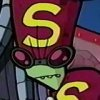 |
Major Appearances:
The Frycook What Came From All That Space
Quote: "Welcome to
ShlOOgorgh's! My name is GashlOOg! May I take your order?"
Affiliation:
Shloogorgh's Flavor Monster
See also: Sizz-Lorr |
|
Gashloog works alongside
Zim at Shloogorgh's on Foodcourtia. While Zim is there as a slave,
Gashloog is a legitimate employee. |
|
Gaz |
|
|
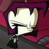 |
Major Appearances:
Quote: "Dib, you will not know the meaning of peace, for I shall
rain misery upon your pizza stealing heart!"
Affiliation:
Skool- Mr Elliot's Class, Membrane Labs
See also: Professor
Membrane, Dib |
|
Dib's younger sister is
obsessed with her video games and will not get off her Gameslave.
She always wears a necklace with a little skull thingy on it and has
purple hair. She loves pizza and she draws sometimes too. Gaz
realizes Zim is an alien trying to take over the Earth, but she
doesn't care. She doesn't care about much. Gaz will probably be a
security guard according to her career day test. |
|
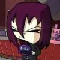
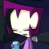
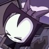 |
|
General |
|
|
|
Major Appearances:
Hamstergeddon
Quote: "I don't care
what the blazes it wants, I just want it stopped."
Affiliation:
Military
See also: Colonel,
Missile Guy |
|
The general wants to stop
Ultra-Peepi but has no clue how to. He takes advice from Dib, but
when Dib can't tell him how to stop it, he becomes enraged and
orders his soldiers to get Dib out of his tent. The soldiers beat
Dib up. |
|
Ghosts |
|
|
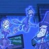 |
Major Appearances:
Dib's Wonderful Life of Doom
Quote: "How's it
goin'?"
Affiliation:
Holographic Creations
See also: Lake
Spooky Monsters |
|
In Zim's holographic world,
Dib proves the existence of ghosts when he shows the world the
ghosts of Shakespeare, Abe Lincoln, and a janitor. |
|
Giant Fish in a bear
suit |
|
|
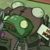 |
Major Appearances:
Bad, Bad Rubber Piggy
Quote: none
Affiliation: The
Future
See also: |
|
As a result of tampering
with the past, giant fishes in bear suits would attack Tokyo. When
Zim sent rubber piggies into the past, one appeared in Tokyo holding
a "Hi Mom!" sign. |
|
Giant flesh-eating demon
squid |
|
|
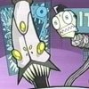 |
Major Appearances:
Zim Eats Waffles
Quote: none
Affiliation: Zim
See also: Cyborg
Zombie Soldiers |
|
An experiment gone awry,
this monster squid breaks free into the base and wrecks havoc along
with an army of cyborg minions. |
|
Giganto Baby |
|
|
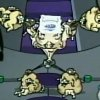 |
Major Appearances:
Plague of Babies
Quote: "AM... DUMB!"
Affiliation:
Space, Nhar-Gh'ok
See also: Shnooky,
Private Fooby |
|
The Nhar-Gh'oks merge into
one being called Giganto Baby, a giant mass of babies vaguely shaped
like a humanoid. The head of the Gignato Baby is an electronic
projection from one of the Nhar-Gh'ok's mouth. Zim defeated the
Giganto Baby by using the power amplifier to send waves of
stupidness from GIR at it. |
|
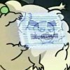 |
|
GIR |
|
|
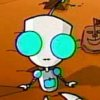 |
Major Appearances:
Quote: "I made it
myself!"
Affiliation: Zim
See also: |
|
GIR is a dysfunctional
robot built by the Tallest so they wouldn't have to give Zim a SIR
unit. They built him with spare parts and loose change among other
assorted objects. It looks kind of not good, but that's what the
enemy will think. Actually, it is complete trash. GIR doesn't even
know what the 'g' in his name stands for. On the way to Earth, he
sings the doom song; a song consisting only of the words 'doom,' 'doomie',
and 'doomadoom'; for over six months. On Earth, he is disguised as a
cute, squeaky, green doggy. GIR loves the scary monkey show and
food. He does have some useful features, like jets, lasers, and
guidance technology. |
|
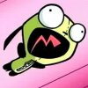
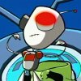
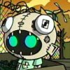
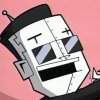
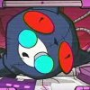
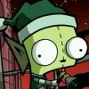
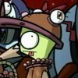 |
|
Greg and the Girly Rangers |
|
|
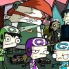 |
Major Appearances:
The Girl Who Cried Gnome
Quote: "You gotta
buy some cookies first to support Moofy."
Affiliation: Girly
Rangers
See also: Moofy |
|
The equivalent of Girl
Scouts in the city, Girly Rangers go door to door selling Chocolate
Covered Ninja Star Cookies. The squad of Girly Rangers go to Zim's
neighborhood to sell cookies in order to support fellow Girly Ranger
Moofy whose foot gets stuck in Zim's gnome-field. The huge scout
leader that Dib gives a piece of ham to is named Greg |
|
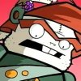
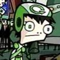
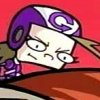
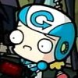 |
|
Greg (FBI) |
|
|
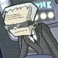 |
Major Appearances:
ZIM Eats Waffles
Quote: "We're
sending someone over to beat you up for playing jokes on the FBI!
Affiliation: FBI
See also: Nick,
Giant Flesh Eating Demon Squid |
|
An FBI agent, Greg takes
Dib's call when he tries to get help for Nick, who ZIM forces to eat
waffles. Greg thinks that Nick is enjoying himself, but sends out an
FBI unit anyway. According to Nick, that FBI unit gets cocooned and
fed to squid babies. |
|
Gretchen |
|
|
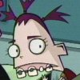 |
Major Appearances:
Bestest Friend -- Lice -- Tak: the Hideous New Girl
Quote: "This place
smells, can I have a soda?"
Affiliation: Skool,
Ms Bitters' Class
See also: Keef,
Mathew P. Mathers III, Melvin, Gretchen |
|
See
Ms. Bitters'
seating charts, both season 1 and 2. |
|
Grout Family |
|
|
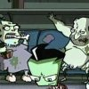 |
Major Appearances:
Door to Door
Quote: "We don't
want none of your government candy!"
Affiliation:
Neighborhood
See also: |
|
One of the families in the
neighborhood is a family of un-evolved people who resemble cavemen.
They live in a dark, small, dirty house and have two children who
are seen eating constantly from a pile of Vienna sausages. They are
the first people that Zim uses the virtual reality helmets on. |
|
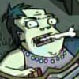
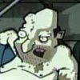
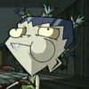
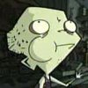 |